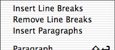

 The menu contains some functions for manipulating paragraphs.
one line of text another line of text a third line of text
will be changed to
one line of text<BR> another line of text<BR> a third line of text<BR>
one line of text<BR> another line of text<BR> a third line of text<BR>
will be changed to
one line of text another line of text a third line of text
blah blaha more text and yet some more and <B>this is bold</B>
will be changed to
<P> blah blaha more text </P> <P> and yet some more and <B>this is bold</B> </P>
Alpha will recognize if you have chosen not to use closing tags for the P element and in this case not insert any closing tags.